Kumanoshi, Mie: things to do, food and stays
Kumanoshi · Mie
Kumanoshi
Highlighted on the Mie map.

Stay
世界遺産リゾート 熊野倶楽部
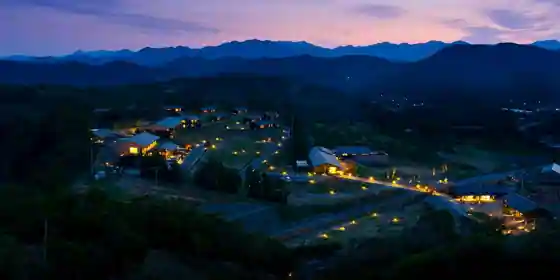
Sekai Isan Resort Kumano Kurabu
紀南荘
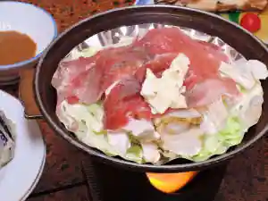
Kinan So
Inn in Ido, Kumanoshi; 4-minute walk from Kumanoshi Station.
わがらん家 -えんつなぎ-
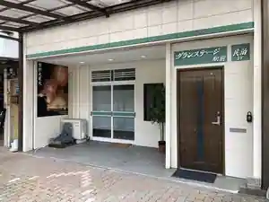
Wagaran Ie - Entsunagi
みはらし亭
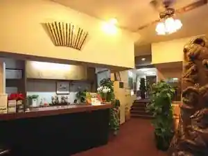
Miharashi Tei
Inn in Ido, Kumanoshi; 4-minute walk from Jrkumanoshi Station.
ビジネスホテル河上
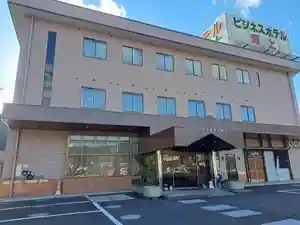
Business Hotel Kawakami
Hotel in Ido, Kumanoshi with business travelers; 5-minute walk from Kumanoshi Station.
ゲストハウス わがらん家 海
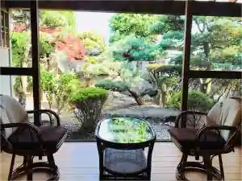
Guesthouse Wagaran Ie Umi
わがらん家
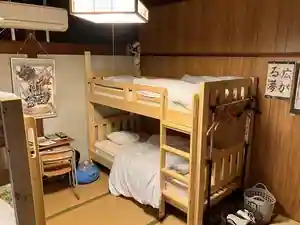
Wagaran Ie
熊野の宿 海ひかり
Kumano No Yado Umi Hikari
Inn in Ido, Kumanoshi with scenic views.
ゲストハウス 鬼のさんぽみち
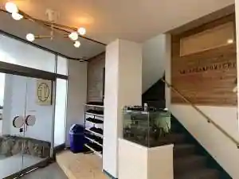
Guesthouse Oni Nosanpomichi
Guesthouse in Odomari, Kumanoshi with Wi-Fi and family-friendly stays.
ホテルなみ
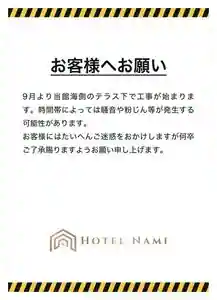
Hotel Nami
Hotel in Odomari, Kumanoshi with business travelers.
里創人 熊野倶楽部
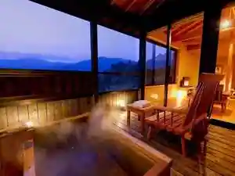
Sato So Nin Kumano Kurabu
Inn in Hisaoya, Kumanoshi with open-air baths.
入鹿温泉ホテル瀞流荘
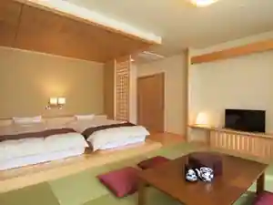
Iruka Onsen Hotel Toro Ryu So
Inn at Iruka Onsen in Norikazu, Kumanoshi.
Dining
肴屋しんたく
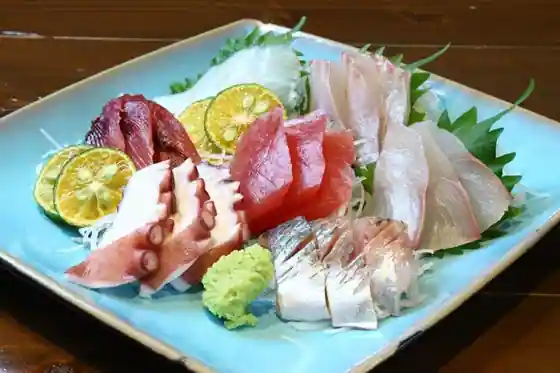
Sakanaya Shintaku
しんばし
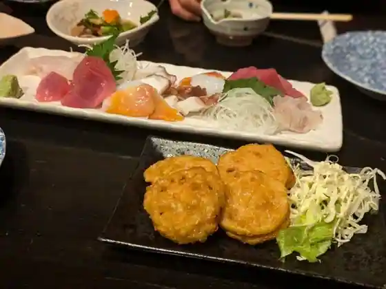
Shinbashi
花のいわや亭
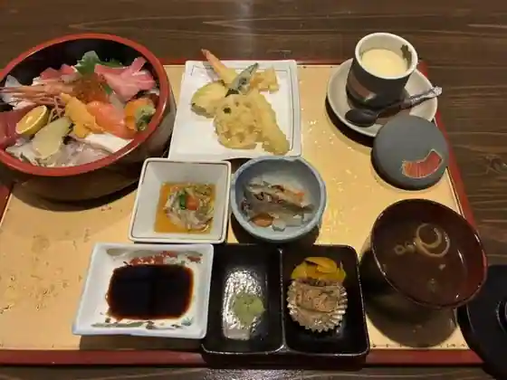
Hana Noiwaya Tei
ほくしょう
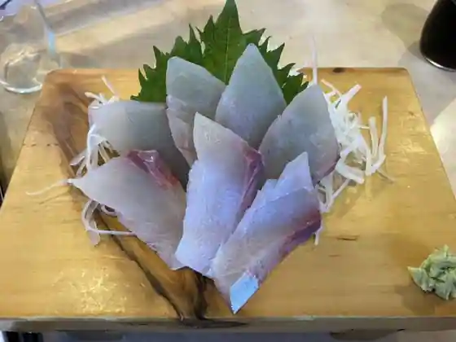
Hokusho
お綱茶屋
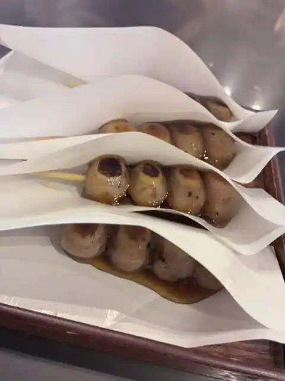
O Tsuna Chaya
熊野倶楽部
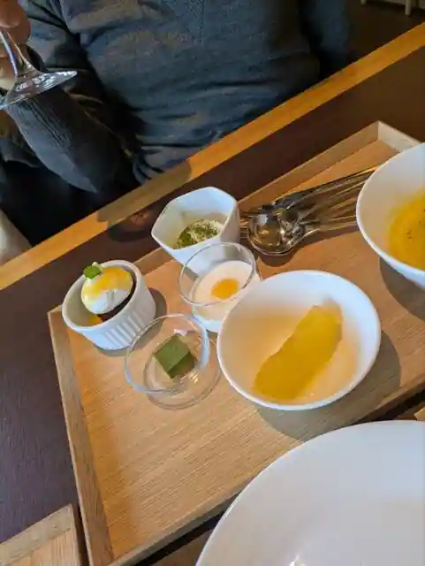
Kumano Kurabu
鬼ヶ城センター
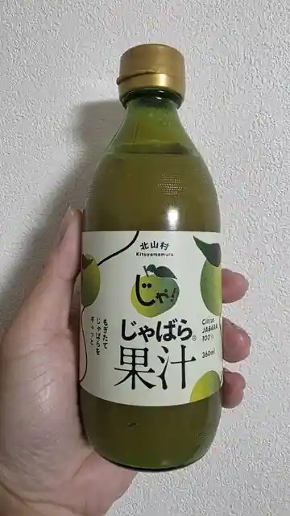
Oni Ke Shiro Center
熊野漁協水産物直売所
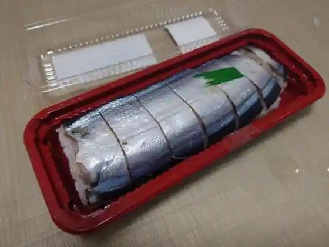
Kumano Gyokyo Suisanbutsu Chokubai Tokoro
Hane Cafe
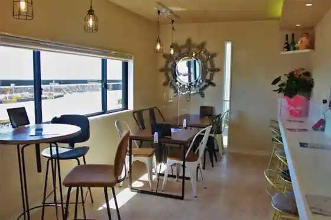
Hane Cafe
糸川屋製菓
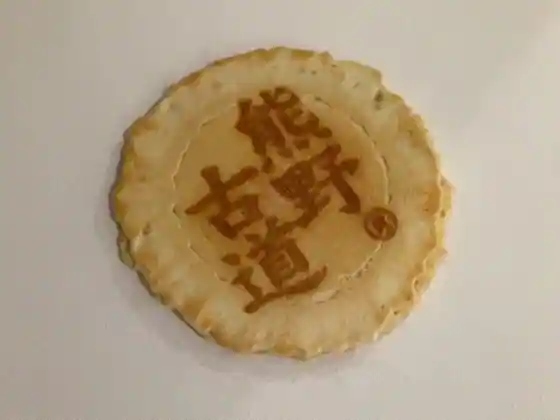
Itokawa Ya Seika
食堂あお
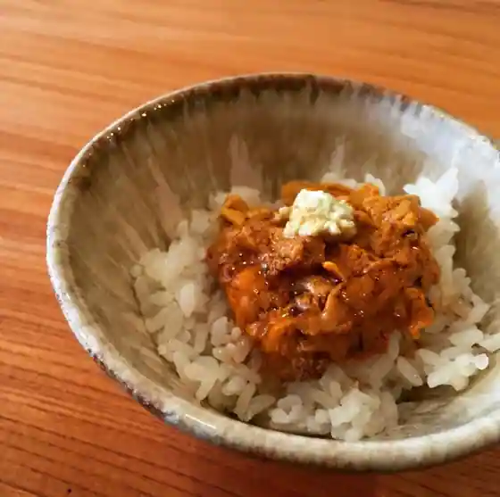
Shokudo Ao
熊野古道おもてなし館
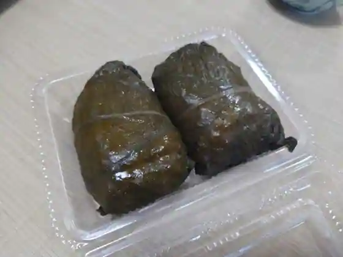
Kumano Kodo Omotenashi Kan
小六
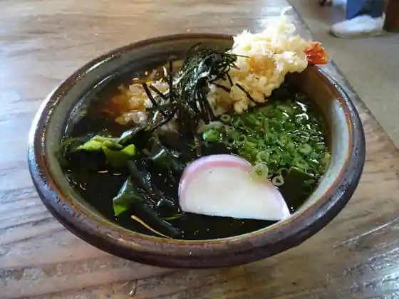
Shoroku
味工房しらさき亭
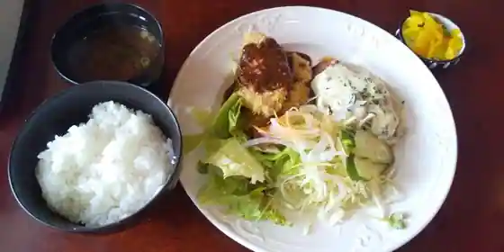
Aji Kobo Shirasaki Tei
レストラン 瀞蘭
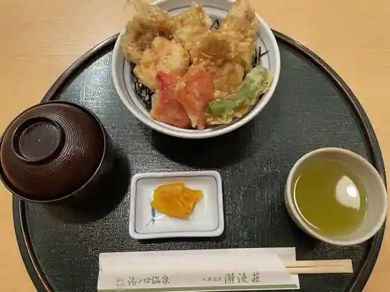
Restaurant Toro Ran
もんいまぁじゅ
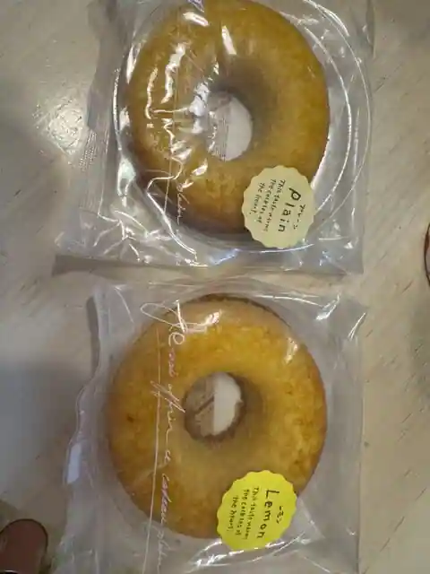
Mon'Imaju
馳走庵
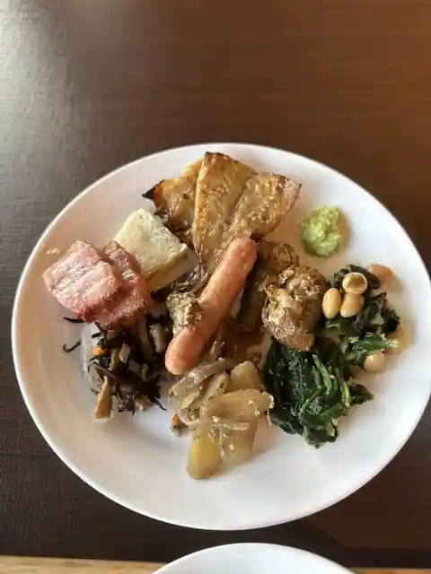
Chiso Iori
モリ ノ バウム
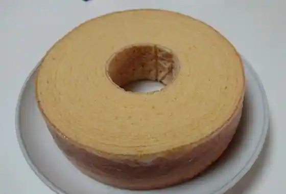
Mori No Baumu
片岡シェーク店
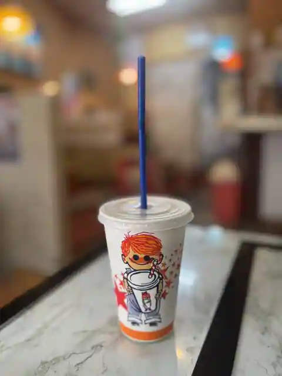
Kataoka Shieku
うお福
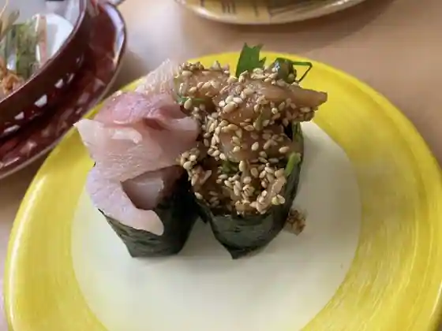
Uo Fuku
湯元山荘湯ノ口温泉
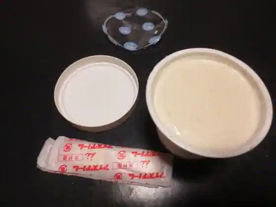
Yumoto Sanso Yu No Kuchi Onsen
Sights
Matsumoto Toge Hana no Kutsu (Kumanoshi Kodo Ise Michi)

Onigashiro (Kumanoshi)
Odomari Beach

Atashika Coast Atashika Beach

Yamazaki Sports Park no Kawazu Sakura

Obune Umebayashi
Roadside Station Kumanoshi Hana no Kutsu (O Tsuna Chaya)
Shichiri Mihama Coast
Hana no Kutsu Shrine
Ao no Cave
Dorokyo Kanko Uotajietto Fune Reiwa 7 Nen 4 Gatsu 10 Nichi Yori Unko Haishi
Shishi Gan
Tsue no Mine
Kuma no Sutajiamu
Roadside Station Kumanoshi Ki no Kuni
Kumanoshi Norikazu Kozan Museum
Nanairo Dam (Nanairo Kyo)
Dai Tan Kura
Dorokyo (Toro Hatcho)
Kumanoshi Kaijo Kanko Yuran Sabisu (Tategasaki Kanko Yuransen)
Burutsurizumu Kuma no
Rerumauntembaiku
Torokko Densha (Konai Densha)
Motomiya Michi (Kumanoshi Kodo Ise Michi)
Akagi Castle Ruins (Akagi Shiro Park) Oyobi Tabirako Toge Keijo Ato
Maruyama Senmaida
Jofuku no Miya
Tategasaki
irokuma kids
Ippan Shadanhojin Higashi Kishu Chiiki Shinko Kosha
San Ta Shrine
Namita Su no Michi Dai Sui Toge (Kumanoshi Kodo Ise Michi)
Kumanoshi Kodo Omotenashi Kan
Futatsugi Shima Toge Ho Kosaka Toge (Kumanoshi Kodo Ise Michi)
Kannon Michi (Kumanoshi Kodo Ise Michi)
Tori Toge to Maruyama Senmaida (Kumanoshi Kodo Ise Michi)
Hama Kaido (Kumanoshi Kodo Ise Michi)
Senmaida Oto Campground
Mie Prefectural Kumanoshi Shonen Nature no Ie
Kumanoshi Tourist Information
Omata no Tambo Ato
Nunobiki Falls (Nippon no Taki Hyakusen)
Tan Kura Shrine
Manaitasama
Kanko Kosugaidomappu (Kumappu)
Kumanoshi Folk History Museum
Kumanoshi Tenisukoto
Yamazaki Sports Park Tenisukoto
Kitayama Ikki Kuyo to (Tabirako Toge no Ikki no Hi)
Oma no Kiyotaki
Tokuji Jinja Juso
Arima no Dai Ibuki
Yu no Tani no Kaya no Kyoboku
Yoji Yakushido (Jo Kusuri Tera)
Tori Toge Koyasu Jizo
Kujira no Kuyo to
Asuka Shrine no Osugi